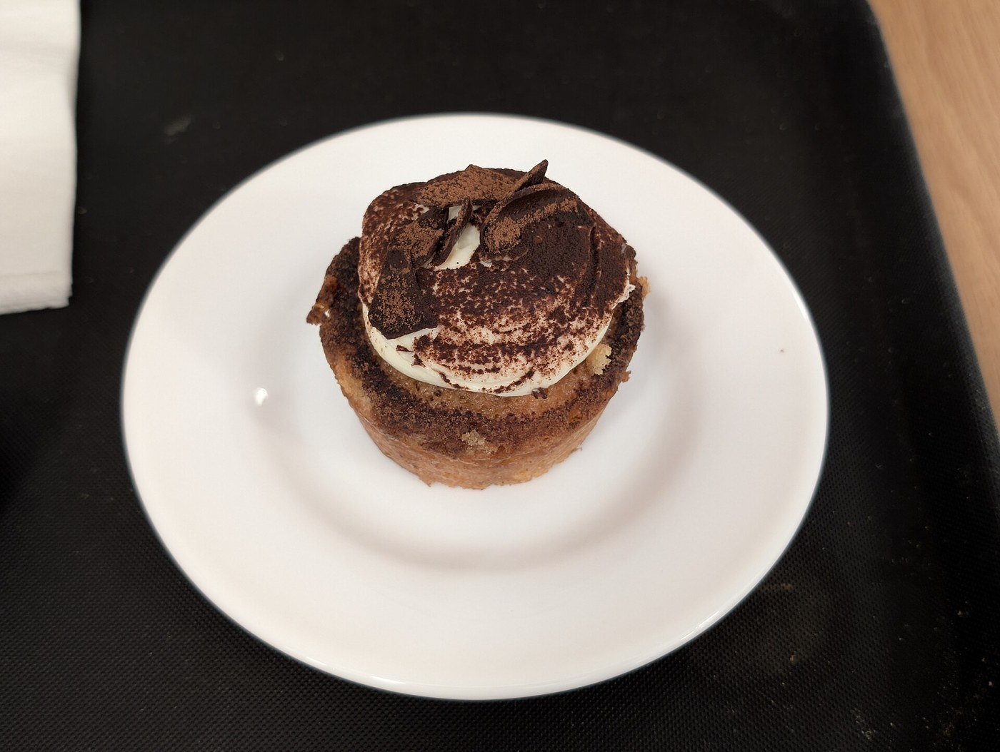
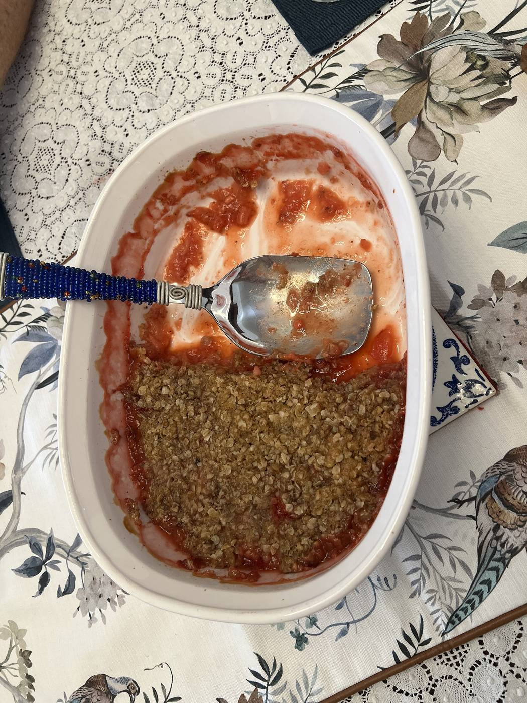
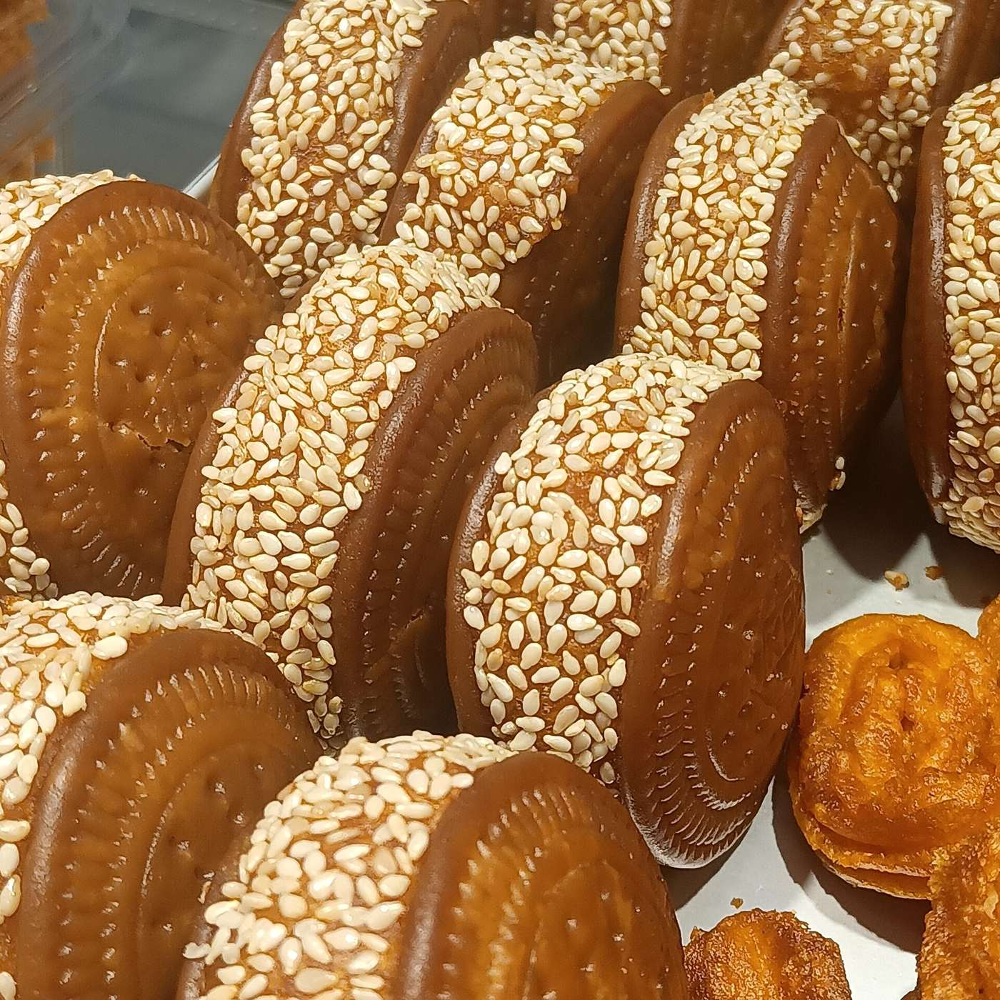
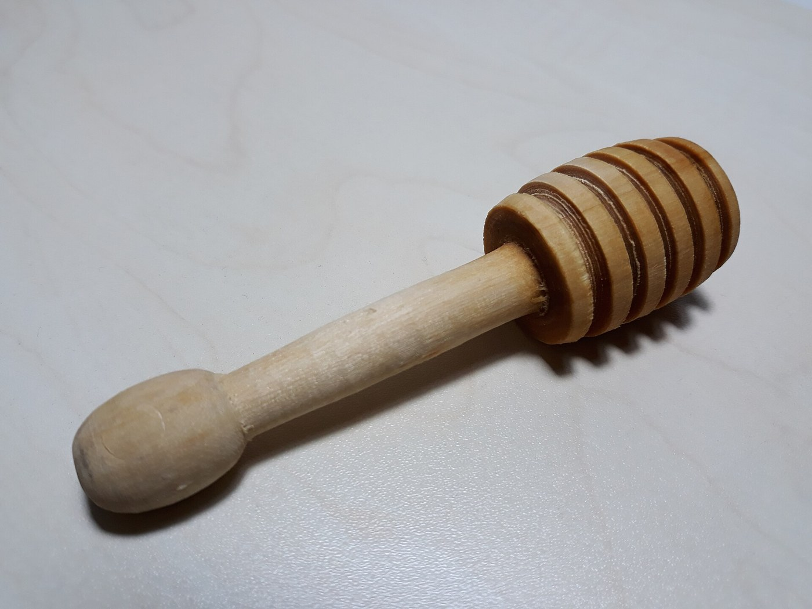

お店のこと
国道124号線沿い、神栖市奥野谷にある喫茶店です。複数の掲載サイトでは、旬の素材を生かしたナチュラルスイーツと、本格的な烏龍茶をはじめとする中国茶を楽しめる喫茶店として紹介されています。
お店の公式Xでは、現在は金・土・日曜に喫茶とケーキ販売を行い、デコレーションケーキは予約を受け付けていると案内されています。
店名の由来やオーナーさんの想いは、公開情報からは確認できませんでした。このページの文章は、確認できた特徴をもとに構成したもので、お店の言葉ではありません。


メニュー
掲載サイトで紹介されていた提供内容です。現在のメニューや価格は変わっている可能性があるため、詳細は準備中です。
お茶・ドリンク
- 烏龍茶などの中国茶
- コーヒー(フレンチプレス)
- カフェオレ(ボウル)
- フラッペ
ケーキ・焼き菓子
- かぼちゃケーキ
- モンブラン
- 和梨のクラフティ
- アップルシナモンマフィン
- シフォンケーキ
- 杏仁豆腐
ご案内
- デコレーションケーキ:予約販売(公式X記載)
- テイクアウト:対応の掲載あり
- ランチ:準備中








写真はフリー素材のイメージで、お店の実際の商品ではありません。
口コミ(イメージ例)
イメージ例
ポットで出てくる中国茶をゆっくり飲みながら、ケーキをいただきました。時間がゆっくり流れる感じがして、また来たいと思います。
イメージ例
季節のお菓子が楽しみで、通りかかると寄りたくなります。お茶との組み合わせを選ぶのも楽しいです。
イメージ例
誕生日にデコレーションケーキをお願いしました。家族みんなで囲めて、いい思い出になりました。
上の3件は制作側が作成したイメージ例であり、実在のお客様の声ではありません。
アクセス・お店の情報
| 所在地 | 〒314-0116 茨城県神栖市奥野谷5556-3(国道124号線沿い) |
|---|---|
| 電話 | 準備中 |
| 営業時間 | 準備中 |
| 定休日 | 準備中 |
| SNS | Instagram @chachaboo.jt |